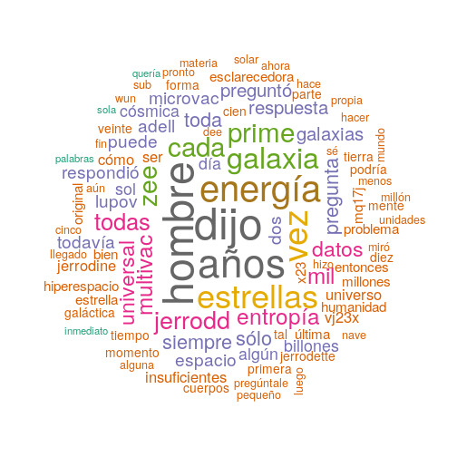

Análisis de Texto en R
Algunas herramientas básicas
Valentín Vergara Hidd
Análisis de Texto en R
Es importantísimo tener en cuenta que R (ni ningún otro software) es capaz de hacer análisis de texto.
En general, usamos software -en el contexto de los análisis de texto- para alguna de las siguientes tareas:
- Ordenar información.
- Reducir la cantidad de información.
- Categorizar.
- Presentar resultados.
Herramientas a utilizar
Para esta clase necesitaremos lo siguiente:
- Una instalación actualizada de R.
- R Studio u otro software similar (opcional).
- Conexión a Internet.
- Una cuenta de twitter.
- Una cuenta de facebook
- Instalación de los siguientes paquetes de R.
install.packages(c("tm", "wordcloud", "readr"))
## Installing packages into '/usr/local/lib/R/site-library'
## (as 'lib' is unspecified)
## Error in contrib.url(repos, type): trying to use CRAN without setting a mirror
Minería de texto
En general, cuando hablamos de ordenar, clasificar o tabular información de texto, nos referimos a una parte importante de la minería de texto.
Kwartler (2017) lo define de esta forma:
Text mining is the process of distilling actionable insights from text.
Por tanto, es un tipo de análisis exploratorio de datos.
Un Primer Ejemplo.
Para este primer ejemplo vamos a usar el cuento de Isaac Asimov: "La Última Pregunta" (1956, originalmente The Last Question), que pueden encontrar en lols materiales del curso como [lq.txt].
Para leer el documento, nos aseguramos de cargar el paquete adecuado
library(readr)
Luego, para leer el archivo de texto y vaciar su contenido en un objeto [lq_raw]. Posteriormente, comprobamos los contenidos del objeto:
lq_raw <- read_lines("/home/nitnelav/lq.txt", skip = 2)
str(lq_raw)
## chr [1:468] "La última pregunta se formuló por primera vez, medio en broma, el 21 de mayo de" ...
Creación de una matriz para guardar el texto.
Previamente hemos hablado de lo importante del concepto de matriz de datos (Samaja, 1994) en cualquier investigación. Vamos a llevar este argumento a un lugar más literal, creando una matriz.
El primer paso consiste en la creación de una lista de números, que asignaremos a cada línea del texto.
diez<-rep(1:ceiling(length(lq_raw)/10), each = 10)
Luego, ajustamos la lista al tamaño real de [lq_raw]:
diez<-diez[1:length(lq_raw)]
Para luego combinar ambos objetos y darles el tipo de objeto data frame.
lq_text<-cbind(diez, lq_raw)
lq_text<-as.data.frame(lq_text)
El siguiente paso es un poco más complejo. Vamos a fusionar los "párrafos artificales" que hemos creado, para que sólo sean una observación (una fila).
lq_text<-aggregate(formula = lq_raw ~ diez, data = lq_text, FUN = paste, collapse = " ")
dim(lq_text)
## [1] 47 2
Finalmente, transformamos en una matriz, facilitanbdo el trabajo que viene a continuación.
lq_mt<-as.matrix(lq_text)
dim(lq_text)
## [1] 47 2
Limpieza del texto.
Como estamos trabajando de forma exploratoria, es necesario quedarnos sólo con aquello que nos interesa.
library(tm)
## Loading required package: NLP
lq_mt<-gsub("[[:cntrl:]]", " ", lq_mt)
lq_mt<-tolower(lq_mt)
lq_mt<-removeWords(lq_mt, words = stopwords("spanish"))
lq_mt<-removePunctuation(lq_mt)
lq_mt<-stripWhitespace(lq_mt)
Creación de un objeto de texto.
El siguiente paso es crear un tipo de objeto que R reconozca como texto, en este caso, un objeto de tipo corpus.
lq_corpus<-Corpus(VectorSource(lq_mt))
lq_corpus
## <<SimpleCorpus>>
## Metadata: corpus specific: 1, document level (indexed): 0
## Content: documents: 94
La nube de palabras
library(wordcloud)
## Loading required package: RColorBrewer
wordcloud(lq_corpus, max.words = 100, random.order = F,
colors = brewer.pal(name = "Dark2", n = 8))

Otro tipo de gráfico.
Podemos tomar la información anterior y presentarla de otra forma.
lq_tdm<-TermDocumentMatrix(lq_corpus)
lq_tdm
## <<TermDocumentMatrix (terms: 1179, documents: 94)>>
## Non-/sparse entries: 2096/108730
## Sparsity : 98%
## Maximal term length: 17
## Weighting : term frequency (tf)
A continuación, se convierte el objeto anterior en una matriz y se verifican sus dimensiones (tamaño)
lq_mat<-as.matrix(lq_tdm)
dim(lq_mat)
## [1] 1179 94
Luego, se da la estructura necesaria y se crea un data frame.
lq_mat2<-rowSums(lq_mat)
lq_mat2<-sort(lq_mat2, decreasing = TRUE)
lq_df <- data.frame(palabra = names(lq_mat2), frec = lq_mat2)
Para posteriormente aislar las 10 primeras palabras (las más frecuentes):
lq_mat3<-lq_df[1:10,]
El gráfico de barras.
library(ggplot2)
ggplot(lq_mat3, aes(palabra, frec)) +
geom_bar(stat = "identity", color = "black", fill = "#87CEFA") +
geom_text(aes(hjust = 1.3, label = frec)) +
coord_flip() +
labs(title = "Diez palabras más frecuentes en La última Pregunta",
x = "Palabras", y = "Número de usos")

Obtener datos de Internet
Datos de Twitter
Podría resultar interesante obtener datos de twitter; aprovechar si estructura y analizar de forma parecida a la anterior el texto.
Para ello, se utilizará el siguiente paquete.
install.packages("twitteR")
library(twitteR)
Obtención de datos de la cuenta.
Para ello, se debe ingresar a Twitter Apps y seleccionar Create new app. En la pantalla siguiente, completar los datos, aceptar los términos y crear la app.

Es importantísimo obtener de esta pantalla los datos de consumer key. consumer secret, access key y access token.

Para facilitar el proceso, sugiero crear un objeto con cada uno de los componentes.
api_key<-"CONSUMER KEY OBTENIDA EN EL PASO ANTERIOR"
api_secret<-"CONSUMER SECRET DEL PASO ANTERIOR"
token_key<-"ACCESS KEY DEL PASO ANTERIOR"
token_secret<-"ACCESS SECRET DEL PASO ANTERIOR"
Ahora, se ingresa esta información en el paquete twitteR.
library(twitteR)
setup_twitter_oauth(api_key,api_secret,token_key,token_secret)
## [1] "Using direct authentication"
Se les va a pedir seleccionar la forma de autenticar su identidad en twitter, ante lo cual es más conveniente seleccionar la primera opción, directa.
[1] "Using direct authentication"
Use a local file ('.httr-oauth'), to cache OAuth access credentials between R sessions?
1: Yes
2: No
Selection: 1
Extracción de los tweets y creación del dataframe
A modo de ejemplo, voy a extraer los tweets de mi cuenta.
my_tweets<-userTimeline("nitnelav", 3200)
Para luego, crear un dataframe con la información
tw.df<-twListToDF(my_tweets)
Preparación de la nube de palabras
tw_text<-Corpus(VectorSource(tw.df$text))
La limpieza del texto es igual que como lo vimos en el caso del cuento anterior.
tw_text<-gsub("[[:cntrl:]]", " ", tw_text)
tw_text<-tolower(tw_text)
tw_text<-removeWords(tw_text, words = stopwords("spanish"))
tw_text<-removePunctuation(tw_text)
tw_text<-removeNumbers(tw_text)
tw_text<-stripWhitespace(tw_text)
La nube de palabras.
wordcloud(tw_text, max.words = 200, random.order = F,
colors = brewer.pal(name = "Dark2", n = 8))